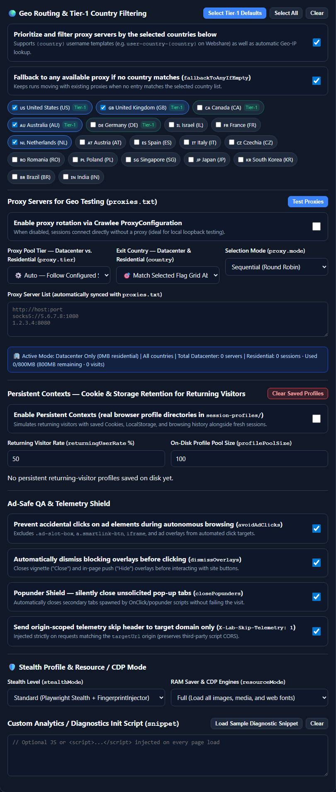

1. Supported endpoint formats (Webshare, Decodo & custom)
Traffic Engine parses standard HTTP/SOCKS5 URLs and raw provider exports (host:port:username:password) from proxies.txt or Tab 5 of the dashboard without extra conversion scripts.
# Standard HTTP / SOCKS5 URLs
http://<username>:<password>@<host>:<port>
socks5://<username>:<password>@gate.decodo.com:<port>
# Raw provider export line
198.51.100.10:8080:<username>:<password>2. 19-country routing & sticky sessions
src/proxyManager.js supports Webshare -<country> suffixes and Decodo {country} placeholders. Enable countryFilterEnabled and specify preferredCountries (for example ["US", "CA", "GB"]) so each visit receives an aligned locale and timezone.

3. Per-domain scoring & automatic cooldowns
src/proxyScoreboard.js tracks reachability, latency, and per-domain error codes. Failing or rate-limited proxies enter a domain-scoped cooldown automatically instead of dragging down the entire pool.
Need to look up target site metadata, tech stack, or hosting readiness before running a test batch? Query HirePulse Gateway or browse the HirePulse Data Tools Hub.